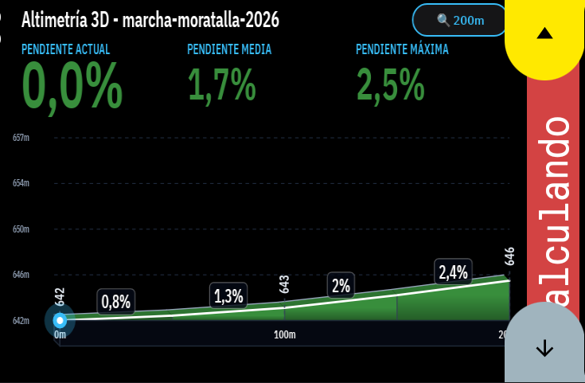
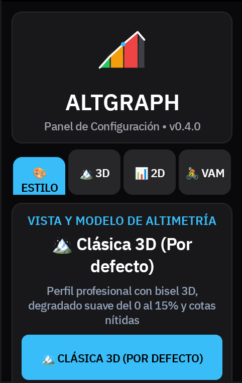

Extensión avanzada desarrollada por David García Pascual. Análisis dinámico de puertos, perfil 3D en relieve, fuentes Google Sans Condensed, modo apaisado rotado a 90°, globo flotante 3D, ritmo VAM e Índice Grado de Fatiga (GF) para Hammerhead Karoo 2 y Karoo 3.

🏔️ Altimetría 3D y Globo Flotante

🎨 Panel Pestaña Estilo

🏔️ Panel Pestaña 3D

📊 Panel Pestaña 2D

🚴 Panel Pestaña VAM
Inspirado en los libros de ruta de las grandes vueltas profesionales, el gráfico de **Altimetría 3D** recrea el perfil completo del puerto en perspectiva isométrica con volumen de montaña, sub-seccionado de 50m dentro de cada km, sombreado degradado y máxima claridad de datos.
Carga directa de tipografías condensadas para números altos, estilizados y ultra-legibles en pantallas Karoo.
Expande la gráfica a un ancho gigante de 800px a pantalla completa liberando la compresión de píxeles.
Cápsula en tiempo real (📍 7.2%) conectada al faro del ciclista que te acompaña sobre el relieve.
División en 20 micro-bloques de 50m dentro de cada kilómetro dibujando descansillos y rampas reales.
Señalización con flecha roja de las 2 o 3 rampas más duras dentro del rango exacto configurado por el usuario.
Escalado matemático estricto en metros donde un 1% nunca luce más empinado que un 10% y los llanos son horizontales.
Campo gráfico en perspectiva isométrica 3D con sub-seccionado de 50m en kilómetros, globo flotante 3D y modo apaisado 90°.
📍 7.2%) sobre el ciclista.Perfil de bloques de distancia con código de colores según pendiente y alertas emergentes de ataque en rampas duras.
Índice científico de dureza acumulada que evalúa la dificultad real del puerto restante considerando pendiente, asfalto y rampa máxima.
Asistente de ritmo para dosificar el esfuerzo en puerto calculando la velocidad recomendada en km/h según la pendiente actual.
Sensor de tendencia inmediata de pendiente que elimina el retraso del altímetro barométrico y registra el pico de rampa máxima.
ALTGRAPH-v0.2.3.apk desde nuestro repositorio en GitHub.adb install -r ALTGRAPH-v0.2.3.apk